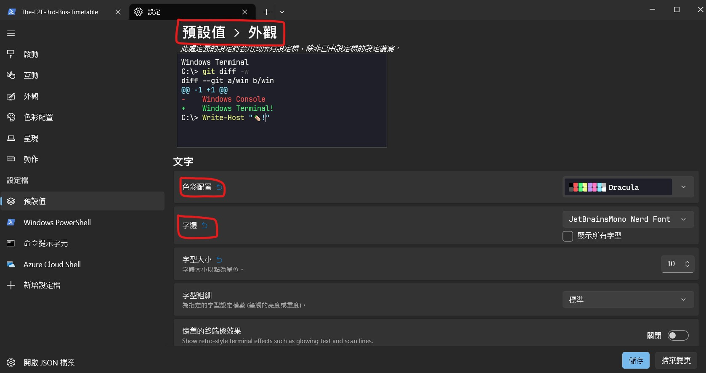

記起來方便下次使用。
參考教學：Make Windows Terminal Look Better | Oh My Posh Guide
要安裝的東西
- 安裝 windows ternimal
- 安裝你喜歡的 themes
- 安裝你喜歡的 fonts
- 安裝 oh my posh（一個 windows ternimal 的插件）
windows ternimal 基本設定
基本的字型、主題可以在「預設值 > 外觀」的地方設定：

也可以點選左下角的「開啟 JSON 檔案」來透過 .json 來設定，例如：
1 | "profiles": { |
其他的部分可以自行找出對應的 key 來設定。
設定 oh my posh 主題
- 執行
Get-PoshThemes或直接到 官網 挑一個喜歡的主題 - 拿到設定主題的指令，通常會長得像這樣：
oh-my-posh init pwsh --config 'C:\Users\user\AppData\Local\Programs\oh-my-posh\themes\<主題名稱>.omp.json' | Invoke-Expression - 執行
notepad $PROFILE打開 shell 的設定檔，再把第二步的指令貼進。（如果出現錯誤，代表你可能還沒有這個檔案，請先執行New-Item -Path $PROFILE -Type File -Force）
完成上面步驟後，如果重新打開有正確顯示就代表成功了。
安裝 Git 相關插件
如果是你用的 shell 是「PowerShell」的話，在使用 git 指令時用 tab 不會像 git bash 一樣有 autocomplete 的功能，所以我參考了這篇 文章 來解決這問題。
首先在終端中執行：
1 | PowerShellGet\Install-Module posh-git -Scope CurrentUser -Force |
接著到設定檔（可以用 $PROFILE 來查看位置）中加入底下這段就可以了：
1 | Import-Module posh-git |